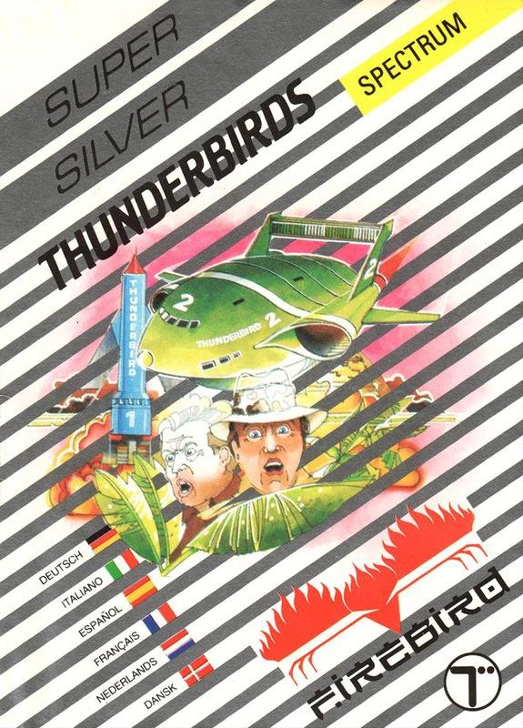
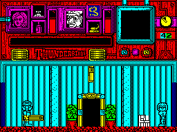

Thunderbirds


{kind=link}

| Publisher: | Grandslam |
| Price: | £12.95 / £14.95 |
| Year: | 1989 |
| Source: | CRASH, Issue 66 |

The year is 2063, the place is a small remote island in the centre of the Pacific Ocean. Not very much happens here, nothing that is until the cry ‘calling International Rescue’ goes up, because tucked away in the middle of this island is the Tracy residence. Jeff Tracy, ex-astronaut and retired industralist is the boss man behind the world’s top global rescue team, aided by his sons Scott, Virgil, Alan, Gordon and John.
Thunderbirds is the latest attempt to do Mr Anderson’s famous early-Sixties puppet creations justice — Firebird had a go some time back.
This is a four-level arcade/strategy game with each section representing a knd of typical TV episode, although all four are related to each other.

Task number one calls International Rescue to a mine where two miners are trapped in a cage deep below the surface far from conventional help. Worse still a leaky valve is letting the mine fill with water.
So Alan, Virgil and Horatio Hackenback III — Brains — head to the rescue. Virgil waits in Thunderbird 2 as the others rummage around the mine solving clues which will save the trapped miners. Each of the characters must take two items from a choice of torch, lamp, laser cutting tool, bag of gob stoppers, klaxon and grease can. It’s your choice to work out which is necessary to each task in in each section of the game. And the characters are controlled separately, with many puzzles only solvable by a particular person.
Succeed in rescuing the miners and you’re given a password to the next level, called Sub Crash. A revolutionary atomic-powered submarine has struck a deliberately planted mine and now teeters on the edge of an underwater volcano whilst its nuclear reactor threatens to go critical at any moment. Alan and Gordon’s task in TB4 is to shut down the reactor and refloat the sub before it falls into the volcano and causes even more aggro. Another six items and the customary time limit apply.
After raising the sub, fragments of limpet mine discovered in its hull have been identified, although the makers are not known. The problem is that the document detailing the mine’s makers are locked in a vault in the Bank of England. So mission three sees the British agents Lady Penelope and her long suffering manservant Parker sneaking into the bank. They have to negotiate faulty lifts, an overzealous guard and a variety of security devices which need plenty of thought to bypass.
Once Penelope and Parker have retrieved the document they discover that the evil Hood is behind the dastardly scheme. They also discover that he’s holding International Rescue to ransom, having photographed the Thunderbird craft at the scene of the sub crash. He’s also threatening to explode a 60-megaton bomb if they don’t pay loadsa dosh in three hours.
Countdown To Terror takes Scott and Virgil to Arizona to battle the Hood and destroy his devilish bomb, but as always fiendish puzzles, a manic robot and the evil genius himself threaten the Tracy’s plans.
Grandslam have done an excellent job in converting the puppets from TV to the computer screen. The character sprites all move around the screen as amusingly as their supermarionated cousins (and I mean that as a compliment). The puzzles are devilishly complicated (especially on levels three and four), but not so much as to kill enthusiasm.
MARK
Neat graphics and well devised gameplay gives Thunderbirds the attraction of the TV series. In fact, the graphics mirror the puppets brilliantly and have hardly any colour clash, though there is plenty of colour onscreen. Superb game isn’t it Parker? ‘Yus m’lady’!? Oi!
OLI
RATING
Intricate and accurate graphics let you relive your favourite exciting episodes.
| Presentation: | 92% |
| Graphics: | 91% |
| Sound: | 85% |
| Playability: | 93% |
| Addictivity: | 89% |
| Overall: | 90% |